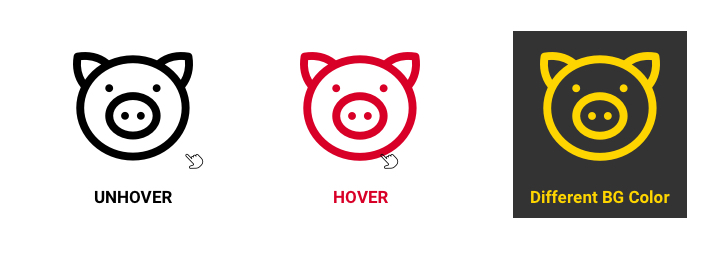

Why we talk about SVG?
In my recent task, I need to implement whole collection of SVG icons into our product site, usually I will include SVG as an <img>, and control it’s size or position by CSS, however, in this case, we need to take care more situations as below.

According to this behaviour, it needs to have hover effect, and appear different color in different condition, keep the flexibility as much as possible, so I think the reasonable approach would be inlining SVG directily, in that way we can control it’s color by manipulating CSS properties.
So we solve this problem? Well.. I hope so, but the pain point is we have a lot of SVG icons, try to image putting more than 20 SVG in the same file, what a big chunk of xml code it is, not easy to read for any one, and if there is one SVG icon located in several part of website needs to be updated, think about how terrifying it would be, our code will become a monster that no one would dare to get close and touch it.
Because of this, we had many discussions about how we can build this in current structure, fortunately we came out with a solution that every one was quite happy with it , since I felt the whole process is really educational, and interesting, I think it’s a good idea to record it in this article, to share the solutions and ideas we’ve proposed.
#01: <img> tag.
Embed a svg as a normal image by <img> tag, using js code to send a XMLHttpRequest to each url for getting SVG code, then replacing the <img> tag, so you will have inline SVG in html after page initialized.
|
|
This code and idea is from this answer on stackoverflow, take a look the example code, which will help you realize the concept.
Pros:
- We can control SVG as we need, since we can have inline SVG in html.
- In this solution, the html will be very clean and maintainable.
Cons:
- We wiil send many XMLHttpRequest at same time, this could cause some issues which is hard to handle, not to mention this will damage the web performance.
- In this solution, you probably need to solve cross domain error if your SVG are stored in diiferent server.
#02: Use <object> with CSS in SVG code.
This way is quite tricky, since we can control style of SVG by writing CSS inside of it, we need to embed it by object tag, otherwise the CSS won’t be parsed.
|
|
Pros:
- We can control SVG by manipulaing the CSS inside it.
- In this solution, the html will be very clean.
Cons:
- Regarding to any SVG update, it is not maintainalbe, need to spend a lot of time and effort just for a tiny change.
#03: Use <object> with CSS Link in SVG code.
Very similiar to the above one, but including a style sheet instead of writing code directly.
|
|
|
|
Pros:
- We can control SVG just by manipulaing CSS file.
- Since all the SVG icons are controlled by same one CSS file, it’s very maintainable.
Cons:
- There will be a lof requests for same CSS file, this is really meaningless and unnecessary.
#04: Save SVG as partial.
If your project is using Mustache.js like us (or other template language), we can save each SVG as an individual file, and include them whenever we need.
|
|
|
|
|
|
Pros:
- We can control SVG just by manipulaing CSS file.
- Since all the SVG icons are controlled by same one CSS file, it’s very maintainable.
- html code looks very clean, and it’s a very flexible way to implement SVG.
Cons:
- One of our approach is storing all the assets in server side, we access it only through API,
apparently this solution might be in the opposite direction from us. - This seems increasing the complexity of project structure(but it’s ok for me).
#05: Store all the inline SVG code in backend.
Storing all the inlined SVG code in backend, apply it to template through API data.
|
|
Pros:
- We can control SVG just by CSS since we will have inline SVG in html.
- Very handy and maintainable, nearly no pain for Front End Dev.
- No need to send any extra request, or run js functions, totally beneficial for performance.
Cons:
- API result is ugly, but not a big deal.
#06: Image sprite.
Put all SVG icons into a single image, implement it as background image, show different icons and behaviour by manipulating background-position.
Pros:
- We can control SVG by manipulaing CSS file.
- Avoid any potential issue from programming way.
Cons:
- Require designer put way more effort to maintain.
- Color transition will look janky.
- Front End Dev will need to spend more time for tweaking position.
#07: Create a custom ICON FONT.
I would say this is the most ambitious solution we’ve ever talked about, it won’t be easy, won’t be quick, but once it’s done, this privately owned icon font will make every one’s life easier.
Pros:
- We can easily control the icons in anyway we want.
- It sounds fucking cool to have our own icon font.
Cons:
- This will take a lof time and effort to complete.
- Need to spend extra time to write document, to tell every one how to use and which icon is which.
- Require more time and effort while adding more icons to SVG collection.
Conclusion:
We choosed #05-Backend as our solution which every one is happy with, it not just meets our requirement, it’s also very straightforward and easy to maintain, not to mention the benefits for Front End Dev.
Meanwhile, I personally would also recommend #04-Partial if you are also using tempalte language in project.